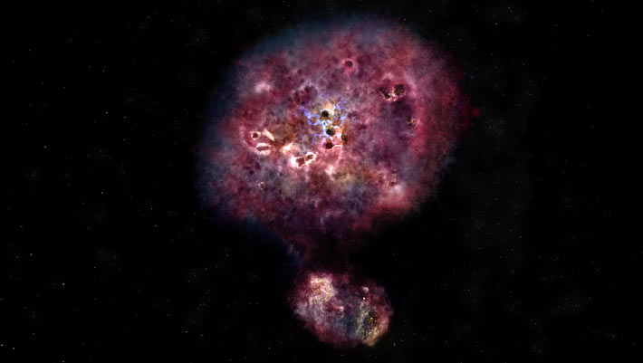
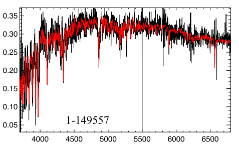
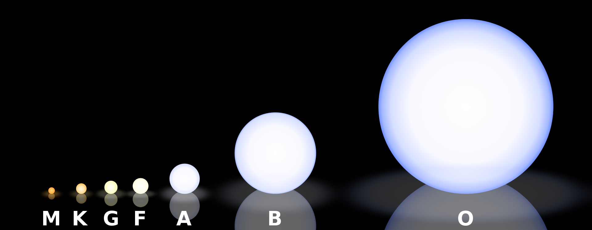
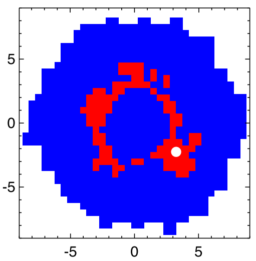

What is a Post-Starburst Galaxy?#
The underlying concept of this project involves Post-Starburst Galaxies and Post-Starburst Regions. So what exactly is a Post-Starburst (PSB) galaxy? We define PSBs as:
Galaxies that are experiencing an abrupt termination of star formation.
This abrupt termination tells us a certain galaxy is going through a rapid transition from its star-forming phase, to quiescence. As such, these galaxies are especially interesting to study as this transitional-phase should provide us with insights into why star-formation is terminated, and therefore how galaxies become quiescent.

In order to quantify these ideas, we will need to look at the emission spectra from our galaxies in order to detect star-formation or the lack thereof. The two things to identify in these spectra are the occurrence of a recent burst of star-formation, and also lack of current star-formation.

As recent star-formation still occurs on the timeline of years, we can identify these bursts through the presence of A-F type stars. If there is an excess contribution of light from these intermediate-age stars, we conclude that there must also be an excessive number of these younger stars compared to their expected rate. This corresponds to a recent burst of star-formation. We identify the excess contribution of A-F type stars through strong Balmer Absorption lines.
Our second criteria is to ensure that the galaxy is becoming quiescent, and therefore we must identify a lack of new star-formation. We can do so by analyzing the nebular emission lines of a galaxy. These emission lines characterize the presence of even younger stars, O and B type stars, and therefore the lack of these emission lines signifies an absence of new stars.

For this project, we’ll be using these two specific cuts for identifying Post-Starburst Galaxies:
\(H\alpha < 3\)
\(Lick H\delta_{A} - \sigma(H\delta_{A}) > 4\)
We also note the difference between a PSB Galaxy and a PSB Region. PSB Galaxies are characterized as galaxies undergoing such a change, where we see a net transition from star-forming to quiescent. However, even in PSB Galaxies, this process is not uniform or instantaneous, and therefore many regions of a galaxy are either pre, or past PSB. As we have the spectral data for many regions across a single galaxy, we can characterize these regions based on their regional spectras, and the regions which satisfy the cut are considered PSB regions.
As an example, the galaxy below qualifies as a PSB galaxy, however, evidently not all regions across the entire galaxy are undergoing the PSB process. We most commonly see this arrangement in galaxies, where the outer edges are newer and have much higher star-formation rates, or the nucleus is generally dominated by an AGN, which is believed to suppress star-formation and seems completely quiescent. This leaves a ring of Post-Starburst regions, which are transitioning to quiescence.

It should be noted that there are other arrangements of PSB regions, and I highly encourage reading more in this paper by Chen (2019) et al.
These specifications can vary across different papers, and there are different consenseus on what emission levels constitute the signs of a Post-Starburst Galaxy. In the results section, we will also outline our conclusions through a different PSB cut, and the motivation behind why we chose a second cut